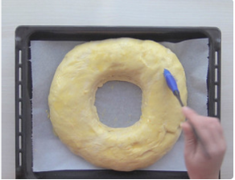
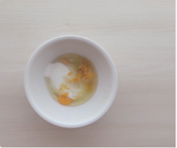

1-Origen
2-Ingredientes
3-Preparación del fermento, poolish o Biga
4-Preparación de la masa
5-Amasado
6-Reposo de la masa
7-Decoración y Previo horno
8-Horneado y presentación final

La mayoría de los niños adoran el roscón de reyes, también conocido como rosca o rosco de reyes. Se trata de un bollo de masa dulce adornado con trozos de fruta cristalizados que se suele rellenar con crema y en cuyo interior se introducen diversas sorpresas. Este manjar es típico de varias regiones de España, aunque también se consume en Portugal, México y Argentina el 6 de enero o día de Reyes. Sus orígenes se remontan varios siglos atrás, aunque lo cierto es que el roscón de reyes no guarda mucha relación con el nacimiento de Jesús o la llegada de los reyes a Belén.
La historia comienza mucho antes de Jesús. En los tiempos del Imperio Romano, el solsticio de invierno se celebraba a lo grande con enormes festines en honor al dios Saturno. Durante estos días se repartía un pan con forma redonda, el primer antecedente de la Rosca de Reyes.
Después de la adopción del cristianismo como religión oficial en las naciones de Europa, las tradiciones paganas de la época fueron adaptadas y se convirtieron en los festejos de Navidad, en los cuales se celebraba el nacimiento de Cristo. La repartición de estos panes no fue la excepción.
Algunos siglos más tarde, la tradicional torta con habas regresó pero esta vez a España, de la mano de Felipe V, y a Francia. Sin embargo, ya no era la misma torta de las fiestas Saturnales pues en vez de incluir solo habas, también se le incorporaban monedas de oro. Así, quien encontrara las monedas ganaba el premio, mientras aquel que encontrara el haba era considerado un perdedor y, por lo tanto, se le auguraba mala suerte durante todo el año. Se afirma que la idea de introducir una moneda fue de un cocinero de la corte francesa, que por aquel entonces quería sorprender al pequeño Luis XV.
Aunque hoy hemos recuperado esa antigua tradición, algunos detalles han cambiado. El más evidente es que en la actualidad ya no se utilizan monedas de oro sino una sorpresa, que primero fue una figura de cerámica y ahora de plástico resistente al calor. Además, con el paso del tiempo, el haba que inicialmente era símbolo de la prosperidad adquirió un valor negativo.
Otros simbolismos y características fueron agregados, como la forma del pan, que representa el amor de Dios que, al igual que un círculo, no tiene fin o las frutas cristalizadas o deshidratadas, que representan las joyas en las coronas de los reyes.
-700 g de harina de fuerza W220, harina 000 o de trigo
-100 ml de leche entera tibia
-100 g de azúcar
-12,5 g. de levadura prensada de panadería o 4,5 g. de levadura seca de panadero
100 ml de leche entera tibia
-25 g de levadura fresca de panadería o 8 g. de levadura seca de panadero
-3 huevos
-La ralladura de una naranja
-La ralladura de un limón
-100 g de mantequilla en pomada
-30 ml de esencia de Azahar
-2 cucharadas de ron añejo
-Una cucharada de esencia de vainilla
-200 g de azúcar
-1/2 cucharada de sal
-Para la decoración: 2 huevos
-2 cucharadas de agua
-150 g de almendras laminadas


Hay muchas recetas de roscón de reyes y por experiencia la mejor es con prefermento rápido, también llamado masa madre rápida (aunque no es masa madre en absoluto).
No es la masa madre normal pues vamos a introducir un acelerante. Es levadura prensada de panadería, pero si tenéis tiempo podéis preparar la masa madre en casa.
La levadura prensada de panadería la compro en el supermercado. En casi todos tienen de la marca Levital a 0,39 €, es fresca y debéis tenerla en la nevera entre 0º y 10º.
Hay que emplear unos 25 g por cada 500 g de harina de fuerza. En este caso he subido la medida a 30 g por 500 g para que quede más esponjoso.
Ponemos en un cuenco pequeño la leche tibia o templada. Diluímos en ella la levadura prensada de panadería con la cucharadita de azúcar. En otro cuenco echamos la harina de fuerza. Hacemos un hueco en el centro y añadimos la leche con la levadura desleída. Mezclamos bien con una cuchara o tenedor y luego seguimos mezclando con las manos.
Hacemos una bola tal como os muestro en las fotos. Rajamos con un cuchillo afilado haciendo una cruz en la parte de arriba como si fuese un pan de horno. Con la cruz conseguimos que se rompa la masa y suba antes. Buscamos un bol grande y lo llenamos con agua tibia. Sumergimos la bola de masa madre que caerá hasta el fondo. Cuando pasen unos 10 minutos la masa deberá subir y doblar su tamaño (ayudada por el agua tibia).
Cuando esté flotando ya se puede utilizar para incorporar a la masa que os explico a continuación. La retiramos del bol y reservamos en un cuenco para añadirla a la masa del roscón.
Para preparar la masa base ponemos en un bol grande o cazuela, el resto de harina de fuerza previamente tamizada (para evitar que lleve impurezas). Dejamos unas 4 cucharadas de harina separadas para ir engordando la masa.
Lavamos bien (o escaldamos en agua muy caliente) un limón y una naranja. Secamos y rallamos los dos sin que tenga nada de blanco, que si no amarga. Reservamos en un plato para añadir a los huevos.
Mezclamos en otro cuenco los huevos con el azúcar. La ralladura del limón y naranja, la cucharada de esencia de vainilla, la sal y la cucharada de ron. Batimos enérgicamente hasta que blanqueen los huevos y esté todo totalmente integrado. Yo lo hago con la batidora eléctrica, en menos de un minuto tienes todo listo.
Ponemos en un cuenco pequeño la leche tibia que nos queda. Diluímos en ella el resto de la levadura prensada de panadería (25 g). En el centro de la harina hacemos un hoyo con una cuchara. Echamos la mezcla anterior con los huevos y la leche tibia con la levadura.
Batimos con una cuchara de madera desde el centro hacia afuera y vamos poco a poco mezclando con la harina. Añadimos la mantequilla a temperatura ambiente, en pomada, la esencia de azahar y la masa madre (prefermento) que tenemos reservada. Seguimos removiendo lo que empieza a ser la masa durante unos 5 minutos.
Por ahora será una mezcla pegajosa pero firme. Preparamos la zona donde vamos a amasar, por ejemplo la encimera de la cocina es perfecta.
Llenamos la zona de la encimera de harina o con un poco de aceite (depende de la practica que tengáis a la hora de amasar, si es la primera vez con aceite). Sacamos la masa del bol y empezamos a trabajar la masa con las manos. Comenzamos a amasar con las manos aceitadas si es vuestra primera vez (así será mucho más fácil).
Poco a poco podremos manipular la masa con más rapidez, se irá quedando elástica y homogénea. Los tiempos de amasado varían mucho dependiendo de la destreza que tengáis en este tipo de masa, pero no debería llevar más de 45 minutos todo el proceso que os he indicado.
Un buen truco (si tenéis tiempo) es dejar reposar la masa cada 10 minutos de amasado, así os será más fácil de manipular. Sólo tenéis que dejar la masa en reposo durante 15 minutos (así también descansáis) y volver a amasar. Siempre hasta que os quede una masa tersa y elástica.
Vamos tornando la masa en una bola. Cogemos el anterior bol y lo enharinamos. Introducimos la bola de masa en él. Tapamos el bol con un trapo de algodón durante unas 3 horas. Cuanto más frío más le costará a la masa crecer y más esponjoso quedará luego el roscón.
Yo lo suelo dejar en el bol al lado del radiador pero en otra ocasión lo preparé por la noche y lo dejé en la nevera unas 12 horas. A la mañana siguiente estaba perfecto.
Podéis hacerlo de las 2 maneras aunque os recomiendo la de las 3-4 horas. Al cabo de ese tiempo la masa habrá doblado su tamaño y podremos empezar a preparar los roscones de Reyes. Una vez pasado ese tiempo y que la masa ha duplicado su volumen. La dividimos en dos y le damos forma de bola. Dejamos reposar las bolas otros cinco minutos.
Vamos a darle forma al roscón introduciendo los dedos en el centro y vamos agrandando el agujero hasta que adquiera la dimensión que queramos. Podéis poner un vaso previamente aceitado en medio para que no se cierre la masa y luego lo quitáis cuando vaya al horno.
Tal como veis en las fotos salen dos roscones medianos. Nos os preocupéis si parece que son delgaditos ya que tienen que duplicar su tamaño.
Ahora es cuando podéis colar la sorpresa. La tradición manda un haba o una moneda pero últimamente se ven figuritas de porcelana o cristal. Eso ya es cosa de cada uno pero no os olvidéis de envolverlo en papel film para que no se llene de masa.
Una vez dada la forma e introducido el detalle, colocamos sobre una bandeja de horno en la que habremos puesto papel vegetal o parafinado. Lo cubrimos con el paño de algodón para que no se reseque mientras crece. Dejamos reposar durante 2 horitas hasta que los roscones doblen su tamaño.
Batimos los huevos y añadimos unas gotas de leche, este truco evitará que mientras se hornea el huevo se queme y te quedará super bonito.
Pintamos con la mezcla de huevo batido y leche. Siempre muy suavemente con una brocha de silicona pues no queremos pinchar el roscón. Preparamos el azúcar humedecido. Ponemos en un cuenco el azúcar granulado y vamos agregando gotitas de agua.
Mezclamos con los dedos y cuando este bien apelmazado, esparcimos sobre los roscones al gusto. También podríamos utilizar azúcar perlado, que suelen vender en casi todos los supermercados.
Precalentamos el horno a 200° C, temperatura arriba y abajo.
Introducimos primero un roscón y luego el otro. El tiempo de horneado es de 18 a 20 minutos a 180º C pero depende del horno.
Bajamos la temperatura a 170° C los últimos 10 minutos de cocción. Si vemos que se tuesta demasiado ponemos un poco de papel de aluminio por encima hasta que acabe de hornear.
Sacamos del horno y dejamos enfriando uno mientras horneamos el segundo. No os imagináis como huelen, sólo por el aroma tenéis que prepararlos en casa aunque sea una vez.
Dejamos enfriar y ya podemos presentar en rodajas con un café con leche o con lo propio en la noche o el día de Reyes.

